Before — baseline implementation
All mode chips and six word choices preceded the selected animal image, word and listening controls. The picture used a fixed 160 dp height.
Actual production MainActivity captures; see REVIEW.md for inventory, tests and acceptance limits.
All mode chips and six word choices preceded the selected animal image, word and listening controls. The picture used a fixed 160 dp height.
The primary animal picture and spoken-language controls appear before the six-word selector. Explore and each practice mode launch directly from the compact chooser.
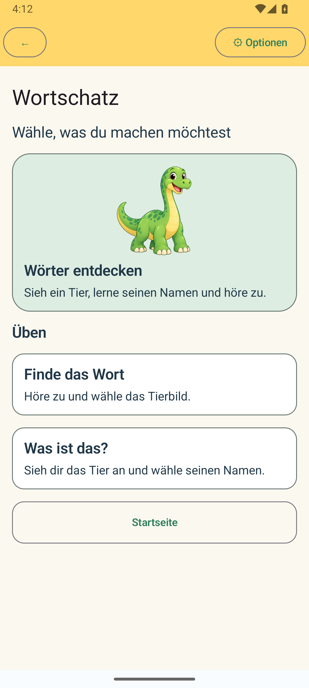
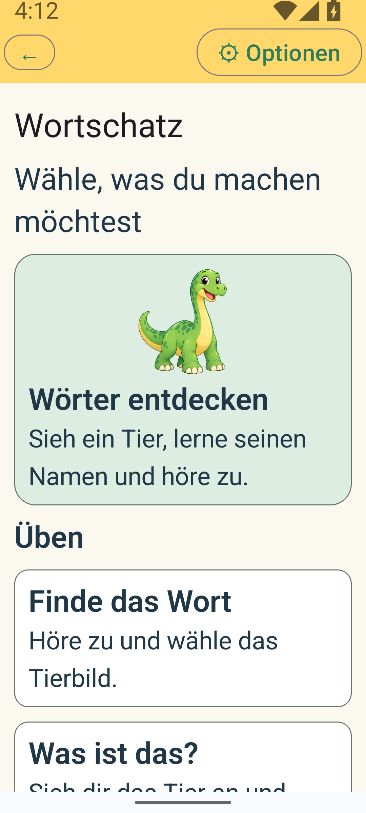
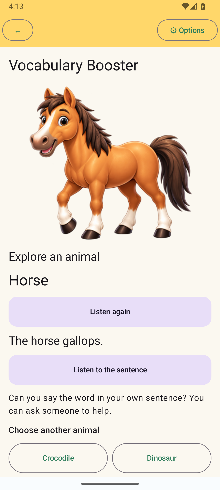
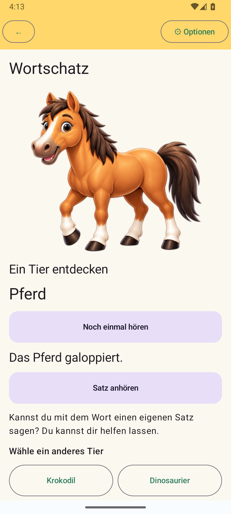
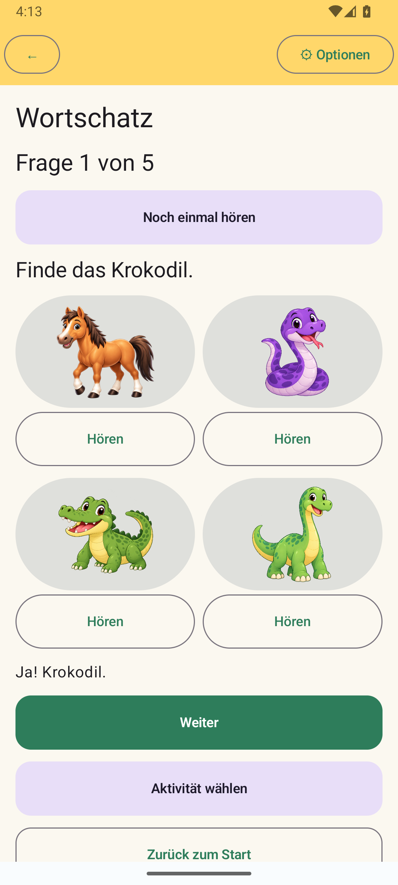
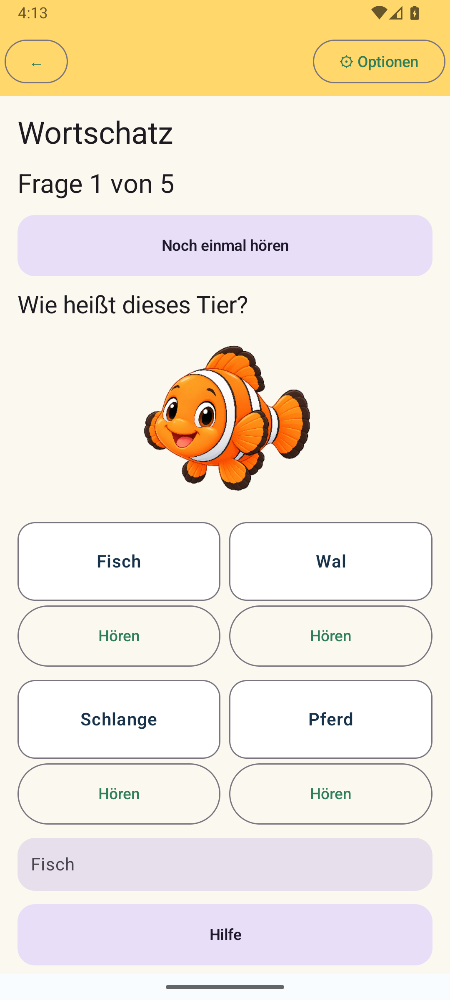
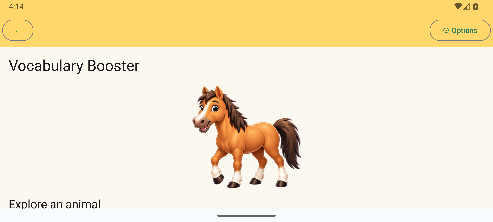
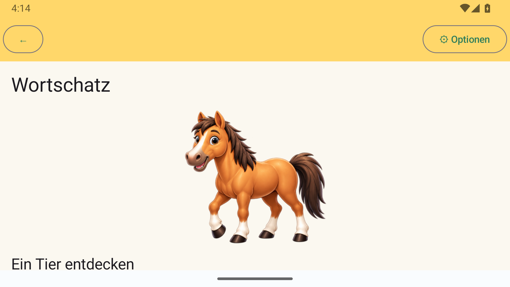
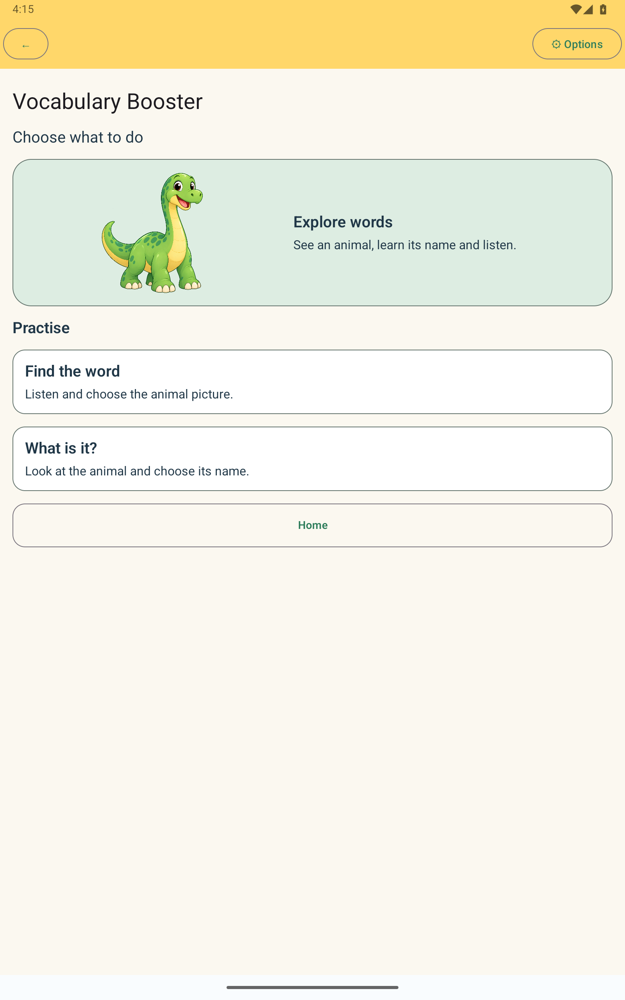
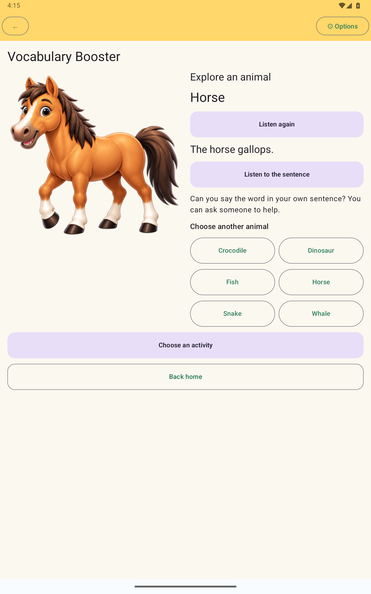
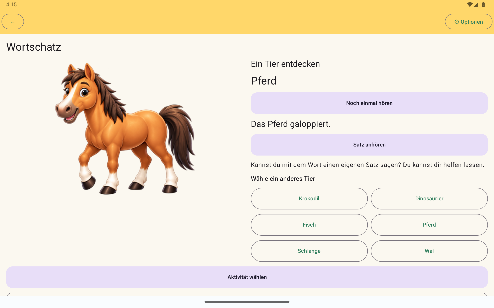
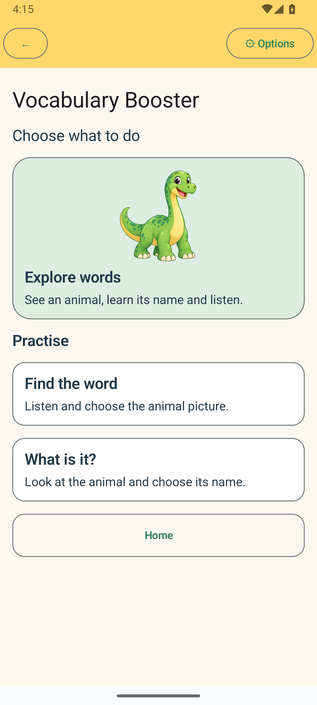
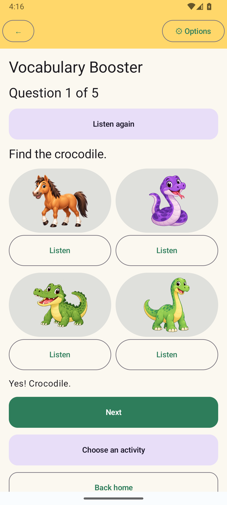